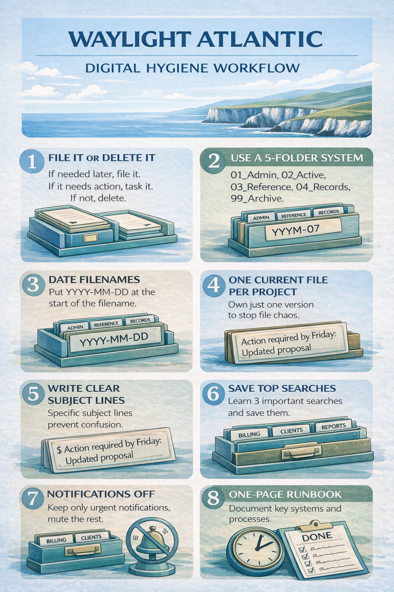

Page Focus
Practical Tips
Practical Tips is a starter guide for reducing digital clutter without a full rebuild.
Each tip is small, repeatable, and designed to improve control quickly.

Practical Tips
Small habits that prevent digital chaos
Start with one shared folder spine and keep it stable. Avoid creating new top-level folders each week.
Use short, consistent naming rules so files can be found quickly by anyone, not just the person who created them.
Apply simple inbox triage rules daily: action, archive, or delete. This keeps email from becoming a second filing cabinet.
Run regular tidy cycles to archive completed work and keep live workspaces focused on current activity.
Page Summary
Practical Tips
One folder spine
Keep one shared top-level structure so people always know where work belongs.
Consistent naming
Use short, repeatable file names that include purpose and date where useful.
Inbox discipline
Process messages with simple rules instead of storing everything in the inbox.
Archive routinely
Move completed material out of live spaces to keep active work clean and manageable.